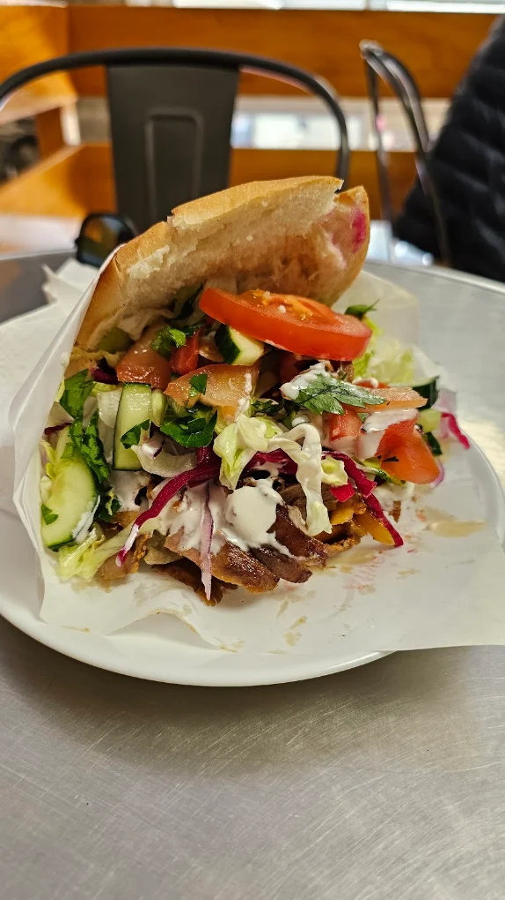
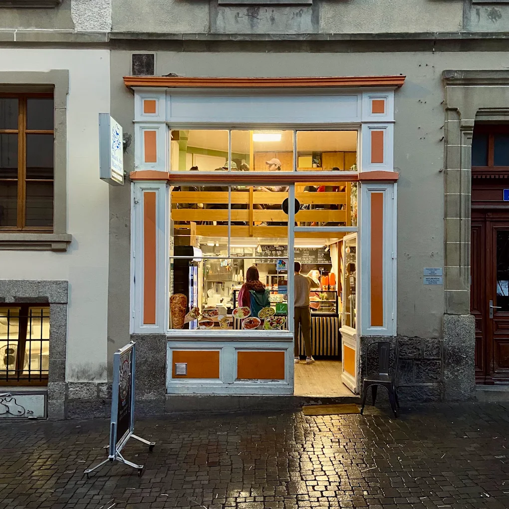

Cahier deux — Les prix du comptoir
La carte
Elle n'a pas beaucoup changé depuis 1998. Ce n'est pas de la paresse : c'est que la recette est la bonne.
| Format | Poulet | Veau & agneau | Köfte | Falafel |
|---|---|---|---|---|
| Grand | 12.– | 14.– | 14.– | 12.– |
| Petit | 9.– | 9.– | 9.– | 9.– |
| Dürüm | 14.– | 15.– | 15.– | 14.– |
| Assiette | 22.– | 22.– | 22.– | 20.– |
Faites glisser le tableau →
Döner box 14.– · Tacos 12.– · Frites 7.– · Baklava à la pièce 1.50
Sandwichs
En petit format, 9.–
Le veau-agneau14.–
Yaprak dönerLa broche de la maison, tranchée à la commande. Salade, tomate, oignon rouge, la sauce que vous voulez.
Fait maison
Le poulet12.–
Tavuk dönerPoulet mariné, monté sur sa propre broche. Plus doux, tout aussi grillé.
Fait maison
La köfte14.–
KöfteBœuf haché du jour, persil, oignon, cumin. Grillée devant vous.
Fait maisonPiquant
Le falafel12.–
FalafelPois chiches, herbes, croustillant dehors, vert dedans. Frit à la commande.
VégétarienFait maison
Dürüm
Roulé dans la galette
Le dürüm veau-agneau15.–
Yaprak dürümLa même viande, roulée dans la galette. Plus long, moins de pain.
Fait maison
Le dürüm poulet14.–
Tavuk dürümPoulet, crudités, sauce à l'ail. La galette passe sur le grill avant d'être roulée.
Fait maison
Le dürüm köfte15.–
Köfte dürümLa köfte grillée, roulée serrée avec le sumac et l'oignon rouge.
Fait maisonPiquant
Le dürüm falafel14.–
Falafel dürümFalafels écrasés, houmous, salade, sumac.
VégétarienFait maison
Assiettes
Frites ou riz au choix
L'assiette veau-agneau22.–
La viande, les frites ou le riz, la salade et les sauces. Dans l'assiette.
Fait maison
L'assiette poulet22.–
Le poulet de la broche, frites ou riz, salade et sauces.
Fait maison
L'assiette köfte22.–
Les köfte grillées à la commande, frites ou riz, salade.
Fait maisonPiquant
L'assiette falafel20.–
Les falafels, le houmous, la salade et le pain chaud.
VégétarienFait maison
Mezze
Au poids ou en portion
Le houmousAu comptoir
HumusPois chiches, tahini, citron, un sillon d'huile d'olive.
VégétarienFait maison
L'aubergineAu comptoir
Patlıcan ezmesiAubergines brûlées sur la flamme, écrasées à la fourchette.
VégétarienFait maison
La tapenade de tomate séchéeAu comptoir
Tomates séchées, huile d'olive, piment doux. C'est celle qui pique un peu.
VégétarienPiquant
Les feuilles de vigneAu comptoir
Yaprak sarmaRoulées à la main, riz, herbes, citron. Servies froides.
VégétarienFait maison
Salades
En accompagnement
Le tabouléAu comptoir
KısırBoulgour fin, tomate, persil, mélasse de grenade, piment doux.
VégétarienPiquant
La salade du bergerAu comptoir
Çoban salatasıTomate, concombre, oignon, persil, citron. Rien d'autre.
VégétarienSans gluten
Olives et grenadesAu comptoir
Olives, graines de grenade, mélasse. Sucré, salé, acide.
VégétarienSans gluten
La salade mêléeAu comptoir
Les crudités du jour, telles qu'elles sont au comptoir.
VégétarienSans gluten
À côté
Et pour finir
La döner box14.–
Viande, frites, sauces, dans la boîte. Celle que tout le monde commande le soir.
Le tacos12.–
La galette pliée, grillée à la presse. Version lausannoise assumée.
Les frites7.–
Coupées épaisses, cuites deux fois. Avec la sauce à part.
Végétarien
Le baklava1.50
BaklavaÀ la pièce. Pistache de Gaziantep, comme il se doit.
Végétarien
Bon à savoir
Une allergie, un régime, une question ?
Demandez au comptoir. On cuisine tout nous-mêmes, donc on sait exactement ce qu'il y a dedans. Les prix peuvent bouger : ceux du tableau noir font foi.

Nous trouver
Horaires
Tous les jours, 11 h – 22 h
11 h – 22 h Sept jours sur sept
Le quartier
